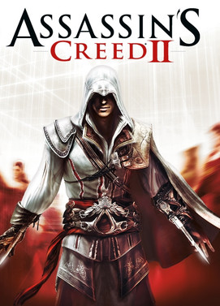
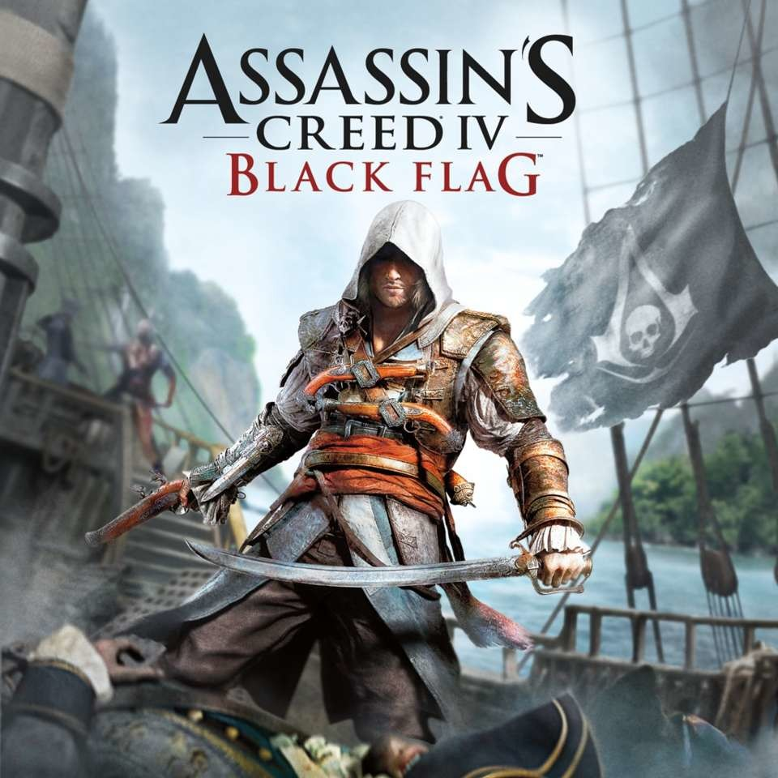

ASSASINS CREED I

Assasins Creed I
Assassin's Creed je akční dobrodružná videohra vyvinutá společností Ubisoft Montreal a publikovaná společností Ubisoft. Je to první díl ze série Assassin's Creed. Hra byla vydána pro PlayStation 3 a Xbox 360 v listopadu 2007. Verze pro Microsoft Windows s názvem Assassin's Creed: Director's Cut Edition a obsahující další obsah byla vydána v dubnu 2008.
Děj je zasazen do fiktivní historie skutečných událostí, odehrávajících se především během třetí křížové výpravy ve Svaté zemi v roce 1191. Hráčskou postavou je moderní muž jménem Desmond Miles, který prostřednictvím stroje zvaného „Animus“ , znovu prožívá genetické vzpomínky svého předka Altaïra Ibn-La'Ahada. Prostřednictvím tohoto spiknutí se objevují detaily o tisíciletém boji mezi dvěma frakcemi: Assassin Brotherhood (inspirovaný skutečným řádem Assassins), kteří bojují za zachování míru a svobodné vůle, a Templářským řádem (inspirovaným rytíři). Templářský vojenský řád), kteří se snaží nastolit mír prostřednictvím řádu a kontroly. Obě frakce bojují o mocné artefakty tajemného původu známé jako „Pieces of Eden“, aby nad sebou získaly výhodu. Část příběhu z 12. století sleduje Altaïra, asasína, který se vydává na cestu, aby znovu získal svou čest poté, co se mu nepodařilo získat jeden takový artefakt od templářů; dělá to tak, že najde a zavraždí devět cílů po celé Svaté zemi.
Hra se zaměřuje na používání Altaïrových bojových, stealth a parkourových schopností k poražení nepřátel a prozkoumání prostředí. Hra obsahuje boj proti hackování a sekání, „sociální stealth“ (schopnost využívat davy lidí a prostředí ke schovávání se před nepřáteli) a velký otevřený svět zahrnující různé oblasti Svaté země; především města Masyaf, Jeruzalém, Acre a Damašek, z nichž všechna byla přesně vytvořena tak, aby odpovídala časovému období hry. Zatímco většina hry se odehrává v rámci simulace založené na Altaïrových vzpomínkách, hráč bude v moderní době občas nucen opustit Animus a hrát za Desmonda. Zde jsou omezeni na jedinou místnost, kterou mohou prozkoumat, protože Desmond byl unesen temnou korporací, která v Altaïrových vzpomínkách hledá konkrétní informace, které podpoří jejich vlastní záhadné cíle.
Po vydání získal Assassin's Creed obecně pozitivní recenze, přičemž kritici chválili jeho vyprávění, vizuální stránku, výtvarný design a originalitu, i když byla hra kritizována také za opakující se charakter hry. Assassin's Creed získal několik ocenění na E3 v roce 2006 a také několik cen na konci roku po svém vydání. Hra přinesla dva vedlejší produkty: Assassin's Creed: Altaïr's Chronicles (2008) a Assassin's Creed: Bloodlines (2009), které vylučují moderní aspekt a zaměřují se výhradně na Altaïr. Přímé pokračování, Assassin's Creed II, bylo vydáno v listopadu 2009. Pokračování pokračuje v novodobém vyprávění po Desmondovi, ale představuje novou dějovou linii zasazenou do období italské renesance na konci 15. století a nového protagonistu, Ezio Auditore da Firenze. . Od vydání a úspěchu Assassin's Creed II byly vydány následující hry s různými dalšími Assassiny a časovými obdobími.
ASSASINS CREED II
Assasins Creed II
Assassin's Creed II je akční dobrodružná videohra z roku 2009 vyvinutá společností Ubisoft Montréal a publikovaná společností Ubisoft. Je to druhý hlavní díl série Assassin's Creed a pokračování Assassin's Creed z roku 2007. Hra byla poprvé vydána na PlayStation 3 a Xbox 360 v listopadu 2009 a později byla zpřístupněna pro Microsoft Windows v březnu 2010 a OS X v říjnu 2010. Několik menších funkcí souvisejících s hrou bylo možné uplatnit na Uplay a ve třech rozšiřujících balíčcích ke stažení. , včetně dvou příběhových rozšíření, vyšly na Xbox Live a později i na další platformy. Třídílný živě akční krátký film s názvem Assassin's Creed: Lineage, který slouží jako prequel k hlavnímu příběhu a hraje většinu hereckého obsazení, byl vyroben a zveřejněn na YouTube, aby jej propagoval ještě před vydáním. Hra se zaměřuje na používání Eziových bojových, stealth a parkourových schopností k poražení nepřátel a prozkoumání prostředí. Hra obsahuje velký otevřený svět zahrnující několik italských měst, včetně Florencie, Benátek, Monteriggioni, San Gimignano a Forlì, z nichž všechna byla přesně vytvořena tak, aby zapadla do renesančního prostředí.
Pomocí nově aktualizovaného herního enginu Anvil se Assassin's Creed II začal vyvíjet krátce po vydání Assassin's Creed. Hra získala chválu od videoherních publikací pro své renesanční prostředí, příběh, postavy, design map a vizuály, stejně jako vylepšení oproti svému předchůdci. Prodalo se jí více než devět milionů kopií a je považována za jednu z nejlepších videoher všech dob. Verze pro PC se setkala s určitou kritikou ve vztahu k systému správy digitálních práv, a proto byla trvale odstraněna vždy online DRM. Hra přinesla dvě přímá pokračování: Assassin's Creed: Brotherhood (2010) a Assassin's Creed: Revelations (2011) a vedlejší, Assassin's Creed II: Discovery (2009). Remasterované verze Assassin's Creed II, Brotherhood a Revelations byly vydány jako součást kompilace Assassin's Creed: The Ezio Collection dne 15. listopadu 2016 pro PlayStation 4 a Xbox One a na Nintendo Switch vyjdou 17. února 2022.
ASSASINS CREED IV
Assasins Creed IV
Assassin's Creed IV: Black Flag je akční dobrodružná videohra vyvinutá společností Ubisoft Montreal a publikovaná společností Ubisoft. Je to šestý hlavní díl série Assassin's Creed. Jeho historický časový rámec předchází tomu Assassin's Creed III (2012), ale jeho moderní sekvence následují po sekvenci III. Black Flag byl původně vydán pro PlayStation 3, Xbox 360 a Wii U v říjnu 2013 a o měsíc později pro PlayStation 4, Xbox One a Microsoft Windows. Později byla znovu vydána na Nintendo Switch jako součást The Rebel Collection spolu s Assassin's Creed Rogue v prosinci 2019.
Děj je zasazen do fiktivní historie událostí ze skutečného světa a sleduje tisíciletí starý boj mezi asasíny, kteří bojují za zachování míru a svobodné vůle, a templáři, kteří touží po míru prostřednictvím kontroly. Rámcový příběh se odehrává v 21. století a zobrazuje hráče jako zaměstnance Abstergo Industries (společnosti využívané jako zástěrka novodobými templáři), který se dostane do konfliktu s Assassiny. Hlavní příběh se odehrává v Karibiku během Zlatého věku pirátství v letech 1715 až 1722 a sleduje notoricky známého velšského piráta Edwarda Kenwaye, dědečka a otce hlavního hrdiny Assassin's Creed III Ratonhnhaké:tona a antagonisty Haythama Kenwaye, kteří narazí na Assassina. - Templářský konflikt. Hlavní dějový prvek se týká pokusu o vytvoření nezávislé pirátské republiky v Karibiku.
Na rozdíl od předchozích her se herní prvky soustředí více na lodní průzkum bezproblémové mapy otevřeného světa a zároveň si zachovávají pozemní průzkum z pohledu třetí osoby, boj na blízko a stealth systém. Vrací se také multiplayer, i když pouze s pozemními režimy a nastaveními. Hra se odehrává v Západní Indii se třemi hlavními městy Havanou, Nassau a Kingstonem, spolu s četnými ostrovy, potopenými loděmi a pevnostmi. Hráči mají možnost harpunovat velká mořská zvířata a lovit suchozemská zvířata. Poprvé v sérii je námořní průzkum hlavní součástí hry Assassin's Creed, kde Edward řídí Kavku, brigádu, kterou zajme ze španělské flotily v misi na začátku hry. Na podporu Black Flag byla vydána řada balíčků obsahu ke stažení (DLC), včetně Assassin's Creed Freedom Cry, příběhového rozšíření, které bylo později zpřístupněno jako samostatná hra v roce 2014. Freedom Cry se odehrává více než deset let po hlavní kampani Black Flag. Adéwalé, Edwardův bývalý ubytovatel, který se stal Assassinem.
Assassin's Creed IV: Black Flag získala uznání kritiků a byla jednou z nejprodávanějších her roku 2013, s více než 15 miliony prodaných kopií do roku 2020. Kritici chválili hratelnost v otevřeném světě, vylepšené námořní boje, vedlejší úkoly, grafiku, příběh, postavy a pirátské téma. Moderní příběh a boj však získaly trochu smíšenější odezvu, zatímco kritika padla na aspekty historických příběhových misí, které byly považovány za opakující se. Hra získala několik ocenění a nominací, včetně vítězství Spike VGX 2013 za nejlepší akční adventuru. Po něm následovaly Assassin's Creed Rogue a Assassin's Creed Unity v listopadu 2014.
ASSASINS CREED: ORIGINS

Assasins Creed: Origins
Assassin's Creed Origins je akční RPG z roku 2017 vyvinutá společností Ubisoft Montreal a publikovaná společností Ubisoft. Je to desátý hlavní díl série Assassin's Creed. Příběh se odehrává především v Egyptě, blízko konce ptolemaiovského období (49–43 př. n. l.), příběh sleduje Medjaye jménem Bayek ze Siwa a jeho manželku Ayu a zkoumá původ tisíciletí dlouhého konfliktu mezi Skrytými – předchůdci Assassinské bratrstvo – kteří bojují za mír prosazováním svobody, a Řád prastarých – předchůdce templářského řádu – kteří touží po míru prostřednictvím vynuceného nastolení řádu. Vyprávění zahrnuje také sekvence odehrávající se v 21. století, které sledují novou postavu, Laylu Hassan. Díky velkému otevřenému světu Origins převzal prvky z hraní rolí a začlenil přepracovaný bojový systém založený na hitboxu.
Vývoj hry začal po vydání Assassin's Creed IV: Black Flag (2013). Ubisoft Montreal vedl svůj čtyřletý vývoj s pomocí týmu téměř 700 lidí z ostatních studií Ubisoft po celém světě. Tým intenzivně konzultoval egyptology a historiky, aby zajistil, že prostředí bude ve hře autenticky zastoupeno. Zatímco Assassin's Creed byl každoroční franšízou od Assassin's Creed II (2009), další rok vývoje umožnil týmu hru dále vypilovat. Byla to z velké části reakce na vlažné prodeje Syndicate a problematické spuštění Unity, které bylo při vydání v roce 2014 sužováno technickými problémy.
Origins, oznámený na E3 2017, byl vydán 27. října 2017 pro Windows, PlayStation 4 a Xbox One. Dostalo se mu pozitivních recenzí od kritiků, přičemž mnozí jej označili za zlepšení oproti předchozím záznamům a chválili příběh, postavy, hlasové herectví, přepracované herní systémy, světový design, historickou přesnost a vizuální stránku. Hra vyvolala kritiku za rychlost, design pátrání a technické problémy. Hry se celosvětově prodalo přes deset milionů kusů a byla nominována na několik ocenění na konci roku. Ubisoft po jeho spuštění značně podporoval Origins a vydal dvě placená rozšíření a Discovery Tour, sérii prohlídek s průvodcem, které hráčům umožňují prozkoumat svět ptolemaiovského Egypta pro vzdělávací účely. Po hře v říjnu 2018 následovala Assassin's Creed Odyssey, která se odehrává ve starověkém Řecku během peloponéské války.
ASSASINS CREED: ODDYSEY

Assasins Creed: Oddysey
Assassin's Creed Odyssey je akční RPG z roku 2018 vyvinutá společností Ubisoft Quebec a publikovaná společností Ubisoft. Je to jedenáctý hlavní díl série Assassin's Creed a nástupce Assassin's Creed Origins z roku 2017. Stejně jako její předchůdce se hra vyznačuje velkým otevřeným světem a přebírá mnoho prvků z žánru RPG, přičemž klade větší důraz na boj a průzkum než na stealth. Námořní boj z předchozích titulů v sérii také hraje významnou roli v Odyssey. Prostředí hry, i když je smyšlené, je založeno na skutečných událostech. Vypráví mytologickou historii peloponéské války mezi Athénami a Spartou v letech 431 až 422 před naším letopočtem. Hráči ovládají mužského nebo ženského žoldáka, který bojuje na obou stranách války, když se snaží najít svou rodinu a zlikvidovat tajemnou organizaci známou jako Cult of Kosmos. Odyssey také pokračuje v příběhu Layly Hassan, hlavní postavy představené v Origins, která znovu prožívá vzpomínky žoldáka prostřednictvím zařízení Animus jako součást svého úsilí najít mocný artefakt jménem Assassin Brotherhood.
Vývoj hry byl zahájen krátce po vydání Assassin's Creed Syndicate (2015). Po stopách Origins usnadnila Odyssey přechod Assassin's Creed do řady akčních her na hrdiny tím, že zavedla možnosti hráčů. Ve srovnání s ostatními hrami v sérii má Odyssey větší zaměření na mytologii, v tomto případě řeckou mytologii, a menší zaměření na konflikt mezi Assassiny a Templáři, což je ústřední narativní prvek přítomný ve většině her Assassin's Creed. Během vývoje hry se tým inspiroval dalšími současnými RPG tituly včetně The Witcher 3: Wild Hunt, The Elder Scrolls V: Skyrim a Fallout. Hudbu ke hře složil The Flight.
Odyssey bylo celosvětově vydáno pro Microsoft Windows, PlayStation 4, Xbox One 5. října 2018. Od kritiků získalo obecně pozitivní recenze, s chválou za jeho hratelnost, grafiku, postavy, prvky pro hraní rolí a světový design, ale bylo kritizováno za jeho příliš ambiciózní tempo a pro zahrnutí mikrotransakcí. Odyssey byla komerčním úspěchem a do března 2020 se po celém světě prodalo více než 10 milionů kopií. Ubisoft hru po jejím uvedení na trh značně podporoval, vydal dvě placená rozšíření a Discovery Tour, která zahrnuje sérii prohlídek s průvodcem, které hráčům umožňují prozkoumat svět Classical Řecko pro vzdělávací účely. Po Odyssey následovala v listopadu 2020 hra Assassin's Creed Valhalla, která představuje historické prostředí středověké Anglie a Norska během vikingské expanze po Evropě a uzavírá příběh Layly.
ASSASINS CREED: VALHALLA

Assasins Creed: Valhalla
Assassin's Creed Valhalla je akční RPG pro rok 2020 vyvinutá společností Ubisoft Montreal a publikovaná společností Ubisoft. Je to dvanáctý hlavní díl série Assassin's Creed a nástupce Assassin's Creed Odyssey z roku 2018. Hra se odehrává hlavně v letech 872–878 našeho letopočtu a vypráví fiktivní příběh během expanzí Vikingů na Britské ostrovy. Hráči ovládají Eivora Varinsdottira, vikingského nájezdníka, který se zaplete do staletí starého konfliktu mezi Assassinským bratrstvem, které bojuje za mír a svobodu, a templářským řádem, který touží po míru prostřednictvím kontroly.[c] Současná část hnutí. Příběh se odehrává v 21. století a sleduje Laylu Hassan, asasínku, která znovu prožívá Eivorovy vzpomínky, aby našla způsob, jak zachránit Zemi před zničením.
Hra byla vydána 10. listopadu 2020 pro Microsoft Windows, PlayStation 4, Xbox One, Xbox Series X a Series S a Stadia, zatímco verze pro PlayStation 5 byla vydána 12. listopadu. Obdržela obecně pozitivní recenze s chválou za vyprávění, postavy, hlasové herectví, vizuální stránka, soundtrack, světový design a propojenost aktivit, přičemž je kritizována za délku, technické problémy a opakující se strukturu. Hra měla dosud největší start v sérii Assassin's Creed a během prvního týdne se prodalo nejvíce kopií.